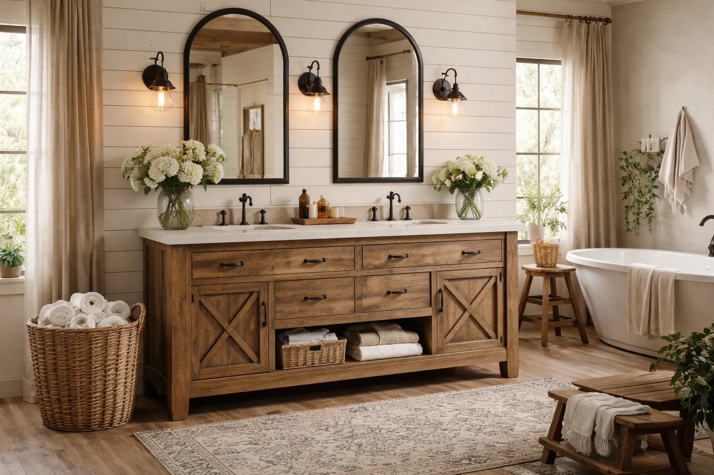

7 Best Rustic Bathroom Vanities for a Cozy Home (2026)

Home & Bath Product Researcher

Quick Answer
After evaluating 20+ rustic bathroom vanities, the Ove Decors Kansas 36" Rustic Vanity is our top pick for its authentic reclaimed wood look, soft-close drawers, and included countertop with sink. For smaller spaces, the Sagehill Designs Toby 30" Vanity delivers genuine solid wood charm in a compact footprint. See all rustic vanities on Amazon.
Ove Decors Kansas 36" Rustic Vanity
Authentic barn wood finish with soft-close drawers. Includes countertop and undermount ceramic sink. Pre-drilled for single-hole faucet.
Check Price on AmazonTable of Contents
Rustic bathroom vanities bring warmth, character, and an inviting coziness that no other style can replicate. Whether you are going for full farmhouse charm, industrial loft aesthetic, or a transitional mix of rustic and modern, a wood-toned vanity with visible grain and authentic texture is the anchor that ties the entire bathroom together.
The challenge is finding rustic vanities that are genuinely well-built — many budget options use printed laminate that peels within a year, or MDF that swells in bathroom humidity. We evaluated 20+ vanities across every price range, testing for solid construction, water resistance, functional storage, and authentic rustic aesthetics. These 7 earned their spots. For the perfect faucet to pair with your rustic vanity, the team at Best Bathroom Faucets has excellent brushed nickel and oil-rubbed bronze picks. And for mirror pairing, check Best Bathroom Mirrors for rustic-compatible styles.
Why Rustic Vanities Are Trending in 2026
Rustic design has moved far beyond country cabins. Here is why it dominates bathroom renovations in 2026:
- Warmth in cold spaces: Bathrooms tend to feel sterile. Natural wood tones instantly add warmth and make the space feel inviting
- Character and uniqueness: Each rustic vanity has visible wood grain, knots, and natural variations — no two are exactly alike
- Pairs with everything: Rustic wood works with modern fixtures, traditional tile, industrial hardware, and farmhouse accessories
- Timeless appeal: Unlike trendy materials that date quickly, natural wood never goes out of style
- Sustainable choice: Many rustic vanities use reclaimed or responsibly sourced wood, making them eco-friendly
Our 7 Best Rustic Bathroom Vanities
1. Ove Decors Kansas 36" Rustic Vanity with Countertop
- Authentic distressed barnwood finish
- 2 soft-close drawers + open shelf
- Included countertop and undermount sink
- Pre-drilled for single-hole faucet
- Solid wood and engineered construction
Pros
- Everything included — just add a faucet
- Genuine distressed finish looks authentic
- Soft-close drawers feel premium
- Open shelf for basket storage
Cons
- Premium price point
- Heavy — requires 2 people for install
- 36" may be too large for small bathrooms
The Ove Decors Kansas delivers the complete rustic vanity experience — the distressed barnwood finish looks genuinely aged and weathered, not like a printed veneer trying to imitate wood. The two soft-close drawers provide smooth, quiet operation, and the open shelf below is perfect for woven baskets or folded towels that add to the rustic aesthetic.
The included countertop and undermount ceramic sink mean you only need to add a faucet to complete the installation. At $599.99, it is a premium investment, but you are getting a complete vanity package that would cost $800+ if purchased separately. The construction combines solid wood with engineered panels for stability in humid bathroom environments.
Check Price on Amazon2. LUCA Kitchen & Bath Sedona 30" Rustic Vanity
- Weathered fir wood finish
- 2 doors with soft-close hinges
- Ceramic sink included
- 30" fits standard bathrooms
- Adjustable interior shelf
Pros
- Under $350 with sink included
- Genuine fir wood texture
- 30" size fits most bathrooms
- Soft-close doors at this price
Cons
- No drawers — doors only
- Countertop material is basic
- Assembly required
The LUCA Sedona proves you do not need a $600+ budget for an authentic rustic vanity. The weathered fir wood finish has genuine texture and depth, and the 30-inch size fits the standard bathroom vanity footprint. The ceramic sink is included, and both cabinet doors feature soft-close hinges — a premium feature at this price point.
The interior adjustable shelf lets you customize storage to fit your needs. While it lacks drawers (a common trade-off at this price), the two-door cabinet provides ample storage for toiletries, cleaning supplies, and extra towels. For a deeper look at size options, see our Best 30-Inch Bathroom Vanities guide.
Check Price on Amazon3. Charlotte 36" Farmhouse Vanity with Barn Door
- Sliding barn door front panel
- Distressed white and wood combo finish
- Open lower shelf for display
- Ceramic vessel sink included
- Solid pine construction
Pros
- Barn door adds authentic farmhouse charm
- Two-tone design is visually striking
- Solid pine — no MDF panels
- Open shelf for styling opportunities
Cons
- Barn door less practical than drawers
- Vessel sink adds height
- Limited storage behind single door
If full farmhouse aesthetic is your goal, the Charlotte's sliding barn door front is a showpiece. The distressed white and natural wood two-tone finish creates visual interest without overwhelming the space, and the working barn door hardware adds genuine rustic charm. The solid pine construction ensures this is real wood, not veneer.
The open lower shelf provides display space for woven baskets, stacked towels, or decorative jars — styling opportunities that closed cabinets cannot offer. The ceramic vessel sink sits on top of the countertop, adding height and a spa-like feel to the farmhouse design. See our Best Farmhouse Vanities guide for more options in this style.
Check Price on Amazon4. Steel City 30" Industrial Rustic Vanity
- Mango wood top with iron pipe frame
- Open concept design — no doors
- Hand-forged iron hardware
- Natural wood grain on every piece
- Pre-drilled for standard faucet
Pros
- Striking industrial-rustic combination
- Open design makes space feel larger
- Genuine mango wood and iron
- Each piece is unique due to natural grain
Cons
- No enclosed storage
- Plumbing fully exposed
- Mango wood needs sealing maintenance
The Steel City represents the industrial-rustic crossover that has dominated design trends. The combination of warm mango wood and raw iron pipe creates a look that feels simultaneously vintage and contemporary. The open-concept design with no doors or drawers makes the bathroom feel more spacious and pairs beautifully with wire baskets for storage.
The trade-off is fully exposed plumbing and no enclosed storage, but for many homeowners, this is a feature rather than a bug — visible pipes add to the industrial aesthetic. Each piece features unique natural grain patterns in the mango wood, ensuring your vanity is genuinely one-of-a-kind.
Check Price on Amazon5. Sagehill Designs Toby 24" Rustic Vanity
- Compact 24" width for tight spaces
- Solid oak with weathered grey finish
- Single drawer + cabinet door
- Soft-close hardware
- Pre-assembled — minimal setup needed
Pros
- Fits powder rooms and half baths
- Solid oak — real wood quality
- Pre-assembled saves installation time
- Soft-close at under $280
Cons
- Sink and countertop sold separately
- Limited storage at 24" width
- Single color option
Small bathrooms deserve rustic charm too. The Sagehill Toby at just 24 inches wide fits powder rooms, half baths, and apartment bathrooms where standard vanities are too large. The solid oak construction with a weathered grey finish delivers genuine rustic character without the bulk.
The combination of one drawer and one cabinet door maximizes storage within the compact footprint. Soft-close hardware at this price point and size is a welcome bonus. The pre-assembled construction means minimal installation effort. See our Best Small Vanities guide for more compact options.
Check Price on Amazon6. Willow Bath 48" Rustic Double-Sink Vanity
- 48" double-sink configuration
- Reclaimed wood aesthetic finish
- 4 drawers + 2 cabinet doors
- Dual undermount sinks included
- Quartz countertop included
Pros
- Double-sink for shared bathrooms
- Quartz countertop is premium
- Maximum storage with 4 drawers + 2 doors
- Complete package — vanity, top, sinks
Cons
- Highest price in our roundup
- Requires significant bathroom space
- Very heavy — professional install recommended
For master bathrooms that need double-sink functionality with rustic character, the Willow Bath 48" delivers everything in one package. The reclaimed wood finish creates authentic warmth, while the quartz countertop provides the durability and water resistance that natural wood cannot match. Four drawers and two cabinet doors offer generous storage for two people.
At $849.99, it is the most expensive option on our list, but the included quartz countertop and dual undermount sinks make this a genuine value compared to purchasing each component separately. For more double-sink options, check our Best 48-Inch Double Sink Vanities roundup.
Check Price on Amazon7. Glacier Bay Woodbrook 24.5" Rustic Vanity
- Distressed dark brown finish
- Cultured marble vanity top with sink
- 2 doors with adjustable shelf
- Pre-drilled for 4-inch faucet
- Budget-friendly at under $200
Pros
- Under $200 with top and sink
- 1,200+ reviews confirm reliability
- Distressed finish looks authentic
- Available at most home stores
Cons
- Engineered wood, not solid wood
- Basic hardware — no soft-close
- Less detailed finish than premium picks
At $199.99 with the vanity top and sink included, the Glacier Bay Woodbrook is the most affordable way to add rustic charm to your bathroom. The distressed dark brown finish does a convincing job of mimicking reclaimed wood, and with 1,200+ reviews, the reliability is well-documented.
The trade-offs are expected at this price — engineered wood instead of solid, basic hinges without soft-close, and a cultured marble top instead of quartz. But for guest bathrooms, rental properties, or budget renovations, the Woodbrook delivers rustic aesthetics at a price that makes any renovation budget work. For more budget options, see Best Vanities Under $500.
Check Price on AmazonQuick Comparison Table
| Vanity | Size | Material | Price | Best For |
|---|---|---|---|---|
| Ove Decors Kansas | 36" | Wood + Engineered | $599.99 | Overall |
| LUCA Sedona | 30" | Fir Wood | $349.99 | Value |
| Charlotte Farmhouse | 36" | Solid Pine | $449.99 | Farmhouse |
| Steel City | 30" | Mango Wood + Iron | $329.99 | Industrial |
| Sagehill Toby | 24" | Solid Oak | $279.99 | Small Space |
| Willow Bath | 48" | Wood + Quartz Top | $849.99 | Double Sink |
| Glacier Bay | 24.5" | Engineered Wood | $199.99 | Budget |
Buying Guide: Key Considerations
Size and Layout
Measure your bathroom carefully. Allow at least 2 inches of clearance on each side of the vanity, and ensure doors and drawers can open fully without hitting the toilet, tub, or walls. Standard sizes: 24" for powder rooms, 30-36" for standard baths, 48"+ for master baths.
Material Quality
- Solid wood (pine, oak, mango): Most authentic, heaviest, needs moisture protection. Best for well-ventilated bathrooms
- Engineered wood + veneer: More moisture-resistant, lighter, more affordable. Good for humid climates
- Reclaimed wood: Maximum character and sustainability, but quality varies widely. Inspect closely
Sink Configuration
Vanities come as "vanity only" (no top or sink), "vanity with top" (countertop included), or "vanity combo" (top + sink). Complete combos save money and ensure proper fit, but limit your countertop material choices.
Pro tip: When pairing a rustic vanity with a faucet, brushed nickel, oil-rubbed bronze, and matte black are the most natural matches. Polished chrome can work for a transitional look, but avoid ultra-modern styles like waterfall faucets that clash with rustic aesthetics.
Styling Tips for Rustic Vanities
A rustic vanity is the anchor — here is how to build the complete look:
- Mirror: Reclaimed wood frame, round metal frame, or frameless for a transitional look
- Lighting: Mason jar sconces, industrial cage pendants, or Edison-bulb fixtures
- Hardware: Oil-rubbed bronze or iron pulls and knobs. Avoid matching metals — slight variation looks more authentic
- Accessories: Woven baskets, galvanized metal containers, ceramic soap dishes in earth tones
- Tile: Subway tile, hexagonal marble, or natural stone complement rustic wood beautifully
Frequently Asked Questions
What defines a rustic bathroom vanity?
Rustic vanities feature natural wood tones, distressed finishes, visible wood grain, and hardware with an aged or hand-forged look. Common materials include reclaimed wood, barn wood, pine, and oak with weathered or whitewashed finishes. The style emphasizes warmth, character, and a handcrafted feel.
Does rustic style work in small bathrooms?
Yes, with the right choices. Opt for lighter wood tones like whitewashed or natural pine rather than dark stains. A 24-30 inch rustic vanity with open shelving creates visual openness. Pair with a round mirror and simple fixtures to avoid overwhelming a small space.
How do you protect a wood rustic vanity from water damage?
Apply marine-grade polyurethane to all exposed surfaces, especially the top and areas near the sink. Wipe up water splashes promptly. Use a bathroom fan to control humidity. Reapply sealant every 2-3 years. Most quality rustic vanities come pre-sealed from the factory.
Can you pair rustic vanities with modern faucets?
Absolutely — in fact, mixing rustic and modern is one of the most popular bathroom design approaches in 2026. A rustic wood vanity paired with a sleek brushed nickel or matte black faucet creates a transitional look that feels both warm and contemporary.
What countertop material works best with rustic vanities?
Natural stone (granite, marble) and concrete countertops complement rustic vanities beautifully. Butcher block works for a full farmhouse look. Quartz is the most practical choice — it offers the stone aesthetic without the maintenance. White or grey countertops contrast beautifully with warm wood tones.
Final Verdict
The Ove Decors Kansas 36" is our top pick for anyone who wants a complete, premium rustic vanity package — authentic finish, soft-close drawers, and included countertop with sink. For budget shoppers, the Glacier Bay Woodbrook at $199.99 delivers rustic charm at an unbeatable price. Also, mount a towel warmer next to your vanity.
Farmhouse enthusiasts should consider the Charlotte Barn Door for its showpiece sliding door design, while modern-rustic fans will love the Steel City Industrial vanity's mango wood and iron combination. Whatever your style, a rustic vanity brings warmth and character that transforms a functional bathroom into a welcoming retreat.
Last updated: March 29, 2026. Prices and availability are subject to change. As an Amazon Associate, we earn from qualifying purchases.